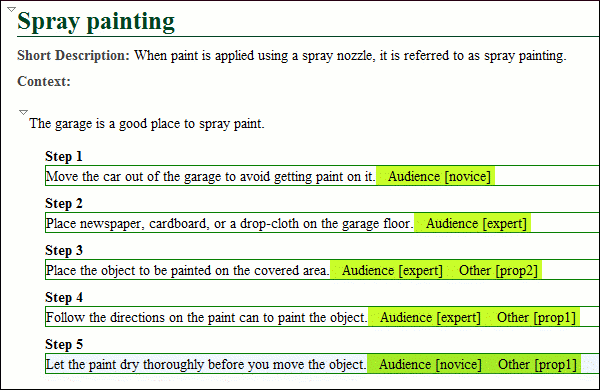
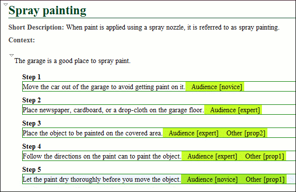
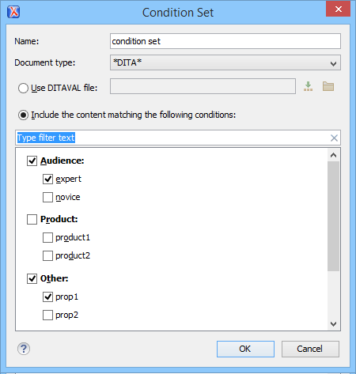
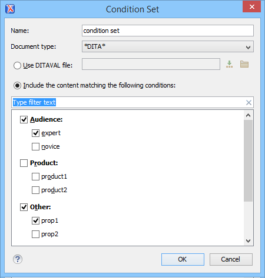
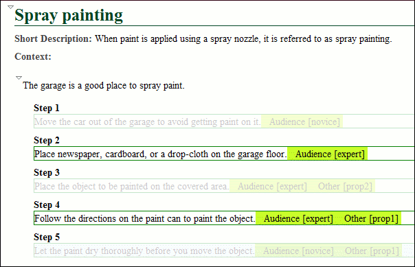
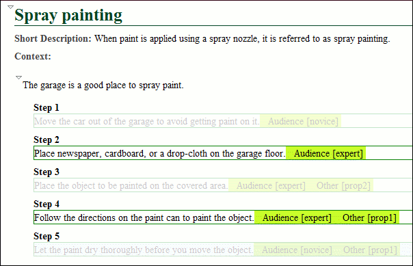

Applying Profiling Condition Sets in DITA
All defined Profiling Condition Sets are available as shortcuts in the  Profiling / Conditional Text toolbar menu. Select a menu entry to
apply the condition set. The filtered content is then grayed-out in the
Author mode, Outline
view, and DITA Maps
Manager view. Your selection will also be used as the default condition set in
transformation scenarios (this can be changed in the Filters tab). An
element is filtered-out when one of its attributes is part of the condition set and its value
does not match any of the values covered by the condition set.
Profiling / Conditional Text toolbar menu. Select a menu entry to
apply the condition set. The filtered content is then grayed-out in the
Author mode, Outline
view, and DITA Maps
Manager view. Your selection will also be used as the default condition set in
transformation scenarios (this can be changed in the Filters tab). An
element is filtered-out when one of its attributes is part of the condition set and its value
does not match any of the values covered by the condition set.
EXAMPLE:
Suppose that you have the following document:


If you apply the following condition set, it means that you want to
filter out the content to only include content profiled with the

expert value
for the @audience attribute and content that has the prop1 value for
the @other attribute.
This is how the document looks in Author mode
after you apply the condition set:

